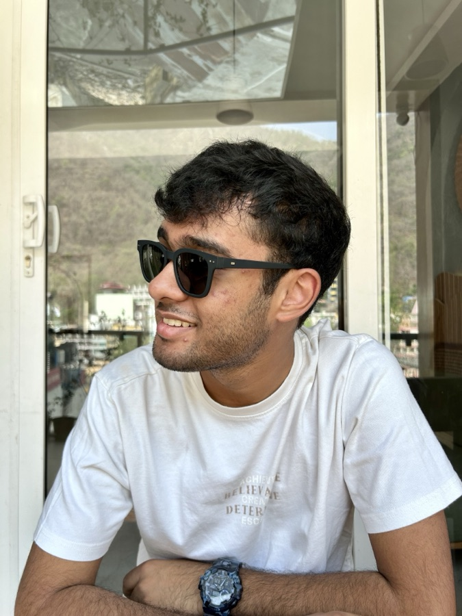

Hello! I'm Ayaan Choudhury, a final year Mechanical Engineering student with an
Interdisciplinary Specialization in Robotics and Mobility Systems at the
Indian Institute of Technology Jodhpur.
I'm broadly interested in 3D vision and robot autonomy, with my current focus on dexterous manipulation
using reinforcement learning and vision-language-action grounding, and LiDAR-based localization and
volumetric mapping for autonomous navigation.
Currently, for my B.Tech project, I work at the Robotics Lab, Department of Mechanical Engineering, IIT
Jodhpur, advised by Prof. Suril Shah,
where I am developing a 7-DOF tendon-driven robotic hand for dexterous manipulation including mechanical design, reinforcement-learning-based control, and sim-to-real transfer, along with
VLA grounding for language-conditioned pick-and-place, where the hand grasps and
places objects specified through natural-language instructions.
I also work with 3DVisLab
(now at IIT Bombay), supervised by Dr. Avinash Sharma, where I work on developing learning-based LiDAR localization
frameworks for robust autonomous navigation in sparse outdoor environments. This (2026) summer, I was a
research intern at BotLab Dynamics, supervised by
Dr. Lokender Tiwari,
where I built real-time volumetric occupancy mapping and incremental ESDF construction from TSDFs for UAV
navigation in previously unmapped indoor environments, and deployed a ROS 2-based autonomy pipeline for
live collision-free flight.
Beyond academics, I've been playing the drums since I was nine, trained at the Trinity Rock & Pop
School (Grade 6), and have performed at more events than I can count through school and undergrad, including Inter IIT Cult Meet 6.0, 7.0, and 8.0. Musically, I'm hooked on Indian rock bands like
Pineapple Express (jazbaat!), The Local Train & Anand Bhaskar Collection (seriously, give them a listen, you'll thank me later), alongside the classic 70s-80s canon: the Beatles, Pink Floyd, and everyone of that era..